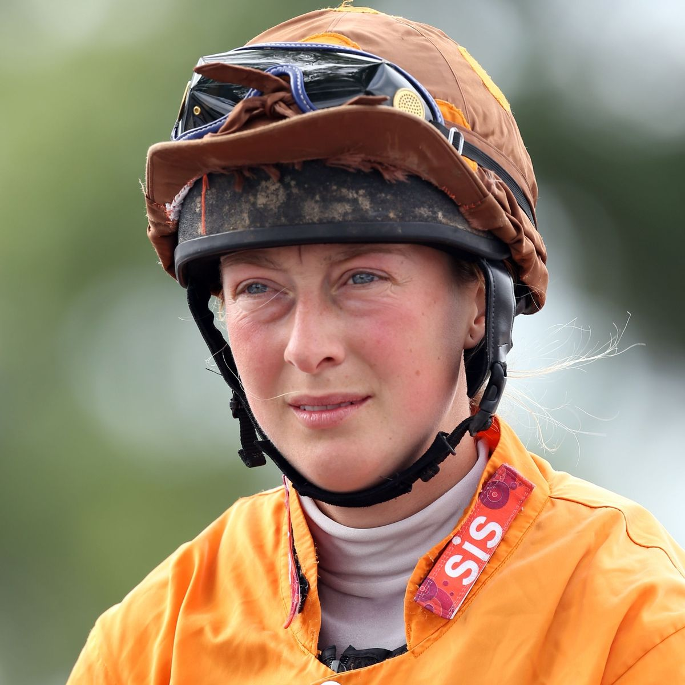

Roger Federer: Swiss legend confirms he will play Roland Garros in 2021
Roger Federer has confirmed he will play in this year's French Open as he continues his return from injury. Federer, 39, is making his comeback after two knee operations and has not played a Grand Slam since January 2020. The 20-time Grand Slam winner made his return after 14 months out at last month's Qatar Open but has not played since. On Sunday, he said will play the clay-court Geneva Open in May followed by Roland Garros, which begins on 30 May. Federer, who won his only French Open title in 2009, overcame Britain's Dan Evans in his comeback match in Doha last month but was then beaten by Nikoloz Basilashvili in the next round. After losing to Novak Djokovic in the 2020 Australian Open, he had an operation on his right knee and after a further setback was ruled out of the entire coronavirus-hit season. He had hoped to return at this year's Australian Open in January but "ran out of time" to regain fitness.
Greenwood double as Man Utd beat Burnley
Mason Greenwood says "anything is possible" in the title race after he scored twice to help Manchester United beat Burnley and close the gap on Premier League leaders Manchester City to eight points. The 19-year-old saw his thumping opener after the break quickly cancelled out when James Tarkowski rose above Harry Maguire to level. Greenwood put the hosts back in front six minutes from time with a fierce left-footed strike that deflected beyond goalkeeper Bailey Peacock-Farrell at the front post. Edinson Cavani then tapped in from close range in stoppage time to wrap up the victory at Old Trafford. The visitors' direct attacking play had caused United problems of their own and they had the ball in the net after 14 seconds. Chris Wood beat goalkeeper Dean Henderson to a floated delivery on the edge of the penalty area and headed into an empty goal, only to be correctly flagged offside. It means Ole Gunnar Solskjaer's side are now eight points behind leaders City in second place with six games to play, while Burnley remain 17th and six points above the relegation zone.
Athletic Bilbao 0-4 Barcelona: Lionel Messi scores twice

Barcelona scored four goals in 12 minutes - including a brilliant strike from Lionel Messi - to thrash Athletic Bilbao and win the Copa del Rey. Barca were frustrated until the 60th minute when Antoine Griezmann turned in Frenkie de Jong's cross before De Jong headed in himself three minutes later. Messi then drove from his own half, exchanged twice with De Jong and found the bottom corner for Barca's third. Messi added his second four minutes later, sweeping in Jordi Alba's cross. Victory gives Barca their first trophy under manager Ronald Koeman and their first silverware since 2019. "To win a title is important for me," said Koeman, whose side are third in La Liga - two points behind leaders Atletico Madrid. "Despite the changes at the club and the young players, at Barca you have to always fight for trophies. "We have the first one and now we are going to fight to the last game in La Liga." For Athletic is was a second Copa del Rey final defeat in two weeks after they lost to Real Sociedad in the delayed 2020 final on 3 April.
Verstappen wins Imola Classic as Hamilton recovers
Red Bull's Max Verstappen took his first win of the year in a chaotic, incident-strewn Emilia Romagna Grand Prix as Lewis Hamilton fought back to second after a rare error. Rain at the start led to one of the most topsy-turvy races in memory as the treacherous conditions caught out the vast majority of drivers at one time or another. There was an early safety car and later a red flag, after a massive crash involving Mercedes' Valtteri Bottas and Williams's George Russell, rivals for a seat at the world champions in 2022. Even Verstappen almost lost his win, when he half-spun at the restart following the red flag, but he managed to collect the car and streak off into the distance as Hamilton fought to regain lost ground. It appeared as if Hamilton had gifted his main rival a huge advantage in what promises to be a tight championship fight when he lost control trying to lap Russell and slid into the barriers at half-distance. But the crash between Russell and Bottas a lap later gave him a second opportunity and he made the most of it, fighting back from eighth at the restart to finish second.
Women's FA Cup: Arsenal and West Ham secure emphatic wins
Women's Super League sides Arsenal and West Ham United secured emphatic wins on a goal-filled Sunday in the Women's FA Cup fourth round. Fourteen-time winners Arsenal thrashed third-tier side Gillingham 10-0, while West Ham beat Chichester & Selsey 11-0. Elsewhere, Rhema Lord-Mears and Courtney Sweetman-Kirk both scored hat-tricks as Sheffield United won 9-0 at Middlesbrough. WSL side Manchester United beat National League North's Burnley 6-0. Last season's losing finalists Everton won 2-1 at home to Durham to secure a fifth-round fixture against WSL leaders Chelsea, and Tottenham defeated fellow WSL side Reading 3-2 after Jessica Naz's extra-time winner.
European Super League a 'spit in the face of all football lovers', says Uefa president Aleksander Ceferin

The European Super League (ESL) is a "disgraceful, self-serving" plan and a "spit in the face of football lovers", says Uefa president Aleksander Ceferin. He also said players who play for teams involved in the closed league would be "banned from the World Cup and Euros". Arsenal, Chelsea, Liverpool, Manchester City, Manchester United and Tottenham are among 12 clubs who have agreed to join the proposed ESL. UK culture secretary Oliver Dowden announced a fan-led review of football. Dowden said the review had been brought forward and would offer a "root and branch" review of the sport, covering finance, governance and regulation. He said while football's authorities are equipped to handle the proposed ESL breakaway, the UK government would provide "full backing". "Be in no doubt, if they can't act, we will," added Dowden. "We will put everything on the table to prevent this from happening. We are examining every option. Put simply, we will be reviewing everything the government does to support these clubs."
Lorna Brooke: Amateur jockey dies in hospital after Taunton fall
Amateur jockey Lorna Brooke has died in hospital following a fall at Taunton earlier this month. Brooke was riding Orchestrated for her mother, Lady Susan Brooke, when the horse fell at the third fence in a handicap chase on 8 April. The 37-year-old was taken to intensive care at Southmead Hospital in Bristol for observation and tests on a suspected spinal injury. After complications she was placed in an induced coma on Friday. A statement from the Injured Jockeys Fund on Monday said: "It is with deep sadness that we have to share the tragic news that Lorna Brooke passed away yesterday. "Her family thank everyone for their kindness in the last few weeks, particularly the staff at Southmead Hospital who were so professional. "They will be having a private funeral and will hold a celebration of Lorna's life once Covid restrictions allow."
Billie Jean King Cup: Katie Boulter seals Great Britain win against Mexico
Great Britain moved a step closer to the 2022 Billie Jean King Cup Finals after Katie Boulter clinched victory in their play-off tie against Mexico. With Britain leading 2-1 in the best-of-five tie, 24-year-old Boulter won 6-4 6-1 against Giuliana Olmos. Anne Keothavong's team progress to next year's qualifiers, where another win will put them in the 12-team finals. "We came in with high expectations and the players delivered," said Keothavong. "It is a special feeling at this stage of the competition to get a win. As a team, we haven't been in this position too many times. "I'm proud of all of them to get the job done." After Britain earned a 2-0 lead on Friday, Heather Watson had the chance to secure victory at the first time of asking earlier on Saturday. The British number two lost 6-3 7-6 (7-1) against Mexico's Marcela Zacarias, leaving Boulter with the task of beating Olmos to avoid the tie going to the deciding doubles rubber. Like she did against Zacarias on Friday, Boulter grew stronger as the match wore on and eventually ran out a comfortable winner. The Billie Jean King Cup is the new name for the Fed Cup, the women's international team event that Britain has finished runners-up in four times but has never won.
Jose Mourinho: Tottenham’s section manager ‘after a little daring or doing’
Tottenham Hotspur's decision to sack Jose Mourinho is a shock when measured by its timing - but hardly a surprise when judged by the direction of travel of his tenure. Spurs announced Mourinho's dismissal while under an avalanche of criticism for the club's move to join the proposed new European Super League but, of more immediate significance, it comes only six days before they face Manchester City in the Carabao Cup final at Wembley. It is a bold strategy when Mourinho has guided Spurs to within one game of their first major honour since they won this competition since 2008, but the graph has been heading on a downward curve for some time.
Mark Cavendish wins fourth Turkey stage as Tom Pidcock misses out in Amstel Gold
Tom Pidcock was beaten to Amstel Gold victory by Wout van Aert following a barely-discernable photo finish. The 21-year-old Briton, who races for Ineos Grenadiers, appeared to round Belgian star Wout van Aert in the final sprint for the line in the Netherlands. Organisers took 15 minutes, studying a digitally enhanced photo, before giving Jumbo-Visma rider Van Aert the victory. Meanwhile, Mark Cavendish took his fourth sprint win of the Tour of Turkey in Sunday's finale. The Deceuninck-Quick Step rider had not won a race for nearly three years but the victories herald a major return to form. Pidcock beat Van Aert, 26, to victory in the Brabantse Pijl classic on Wednesday with a similar move just before the line to the one seen in Sunday's race in the Limburg area. The 219km race is one of cycling's biggest one-day classic races of the season, and saw Pidcock continue the blistering form he has shown in his first season on the World Tour with Ineos.
NBA: Andre Drummond helps Los Angeles Lakers beat Utah Jazz in overtime
Andre Drummond scored a team-high 27 points as the Los Angeles Lakers beat the Utah Jazz 127-115 in overtime. The Jazz, who lead the Western Conference, were without injured starters Donovan Mitchell, Mike Conley Jr and Rudy Gobert. The Lakers, defending NBA champions, were missing their two biggest stars in Anthony Davis and LeBron James "We didn't allow adversity to get us out of our game," said Drummond, who was returning after a toe injury. The Lakers' Dennis Schroder added 25 points, eight assists and six rebounds with Kentavious Caldwell-Pope also finishing on 25 points. Jordan Clarkson led the Jazz who have the league's best record (42 wins, 15 defeats) with 27 points. Ersan Ilyasova finished with 20 points, shooting six of eight from the three-point line.